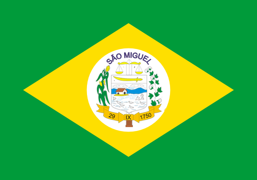

História e Turismo - Uma Jornada através do tempo e dos lugares que contam sua história
Um local agradável para passeios a pé, rodeado por lojas e restaurantes, é o coração da cidade.
Uma bela serra que oferece uma vista panorâmica deslumbrante, ideal para os amantes da natureza.
Um patrimônio histórico, construída no início do século XX, onde são realizadas celebrações religiosas importantes para a cidade.